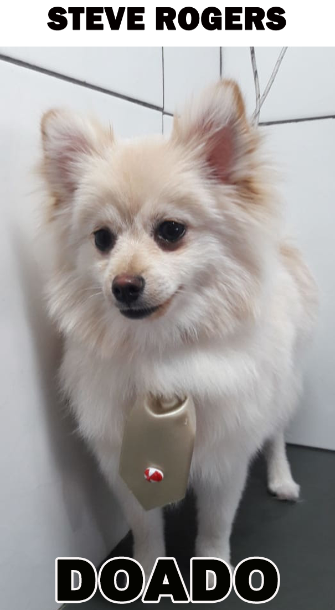
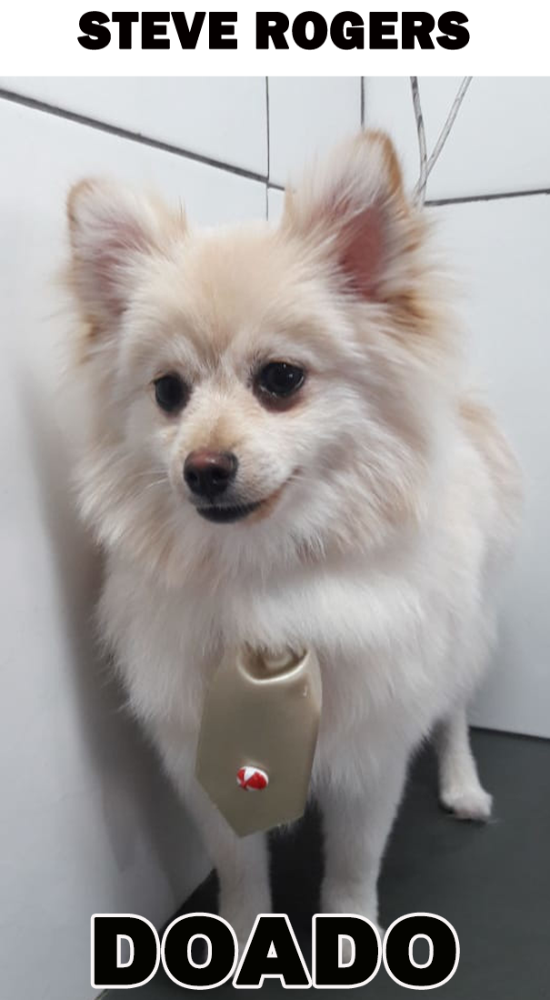
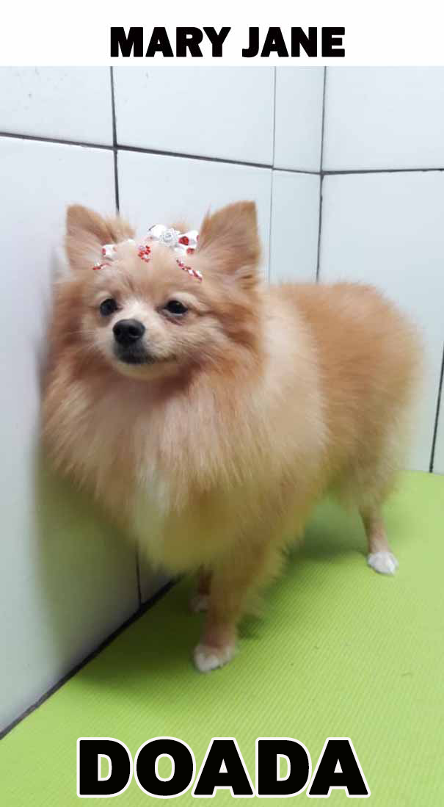
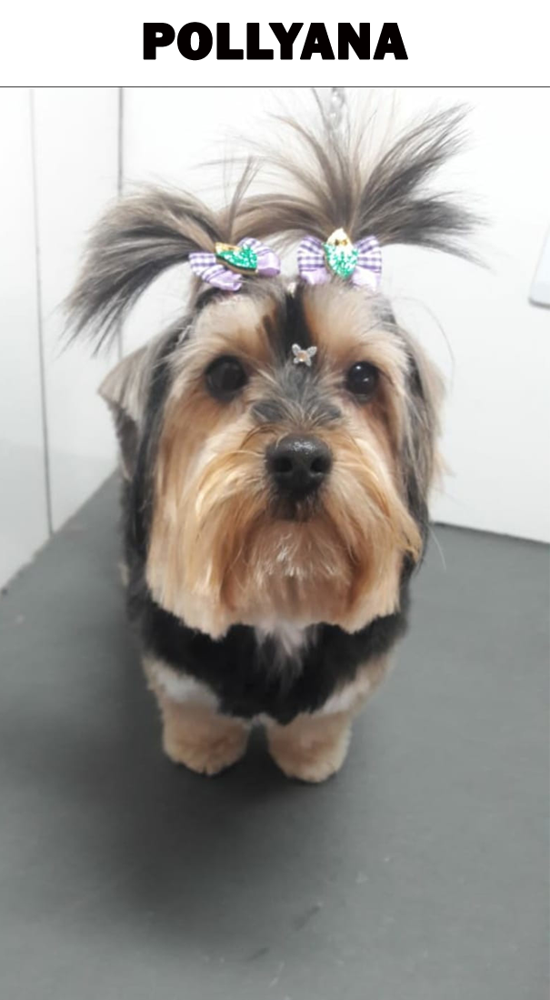
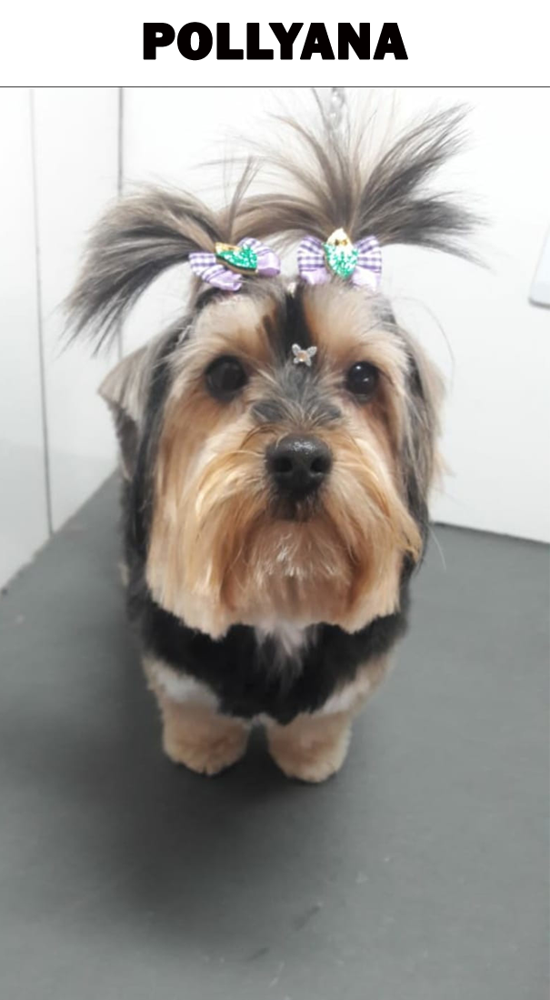

Pais
 


Bruce Banner: Peso: 3,400 kg Cernelha 21 cm. Anão
Steve Rogers: Peso kg 4,150 Cernelha 26 cm. Pequeno
Peter Parker: Peso: 5,100 kg. Cernelha 27 cm. Pequeno
Mães



Mary Jane: Peso: 2,930 kg. Cernelha 24 cm. Anã
Peggy Carter: Peso: 4,175 kg. Cernelha 24 cm. Pequena
Kate Bishop: Peso: 3,135 kg. Cernelha 24 cm. Pequena
Diana Prince: Peso: 3,510 kg. Cernelha 24 cm. Pequena
Sininho: Peso 2,350 Kg. Cernelha 21 cm. Anã
E nossos outros filhos.


 

Cristal: Peso: 3,920 kg. Cernelha 24 cm. Pequena. Doada
Natasha Romanoff: Peso: 4,200 kg. Cernelha 19 cm. Anã .Doada
Paulo: Peso: 9,400 kg Cernelha 23cm
Pollyana: Peso: 4,410 kg Cernelha 9 cm